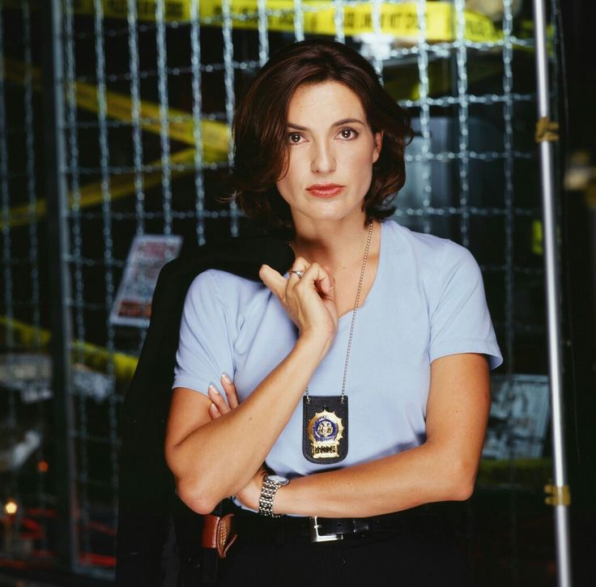
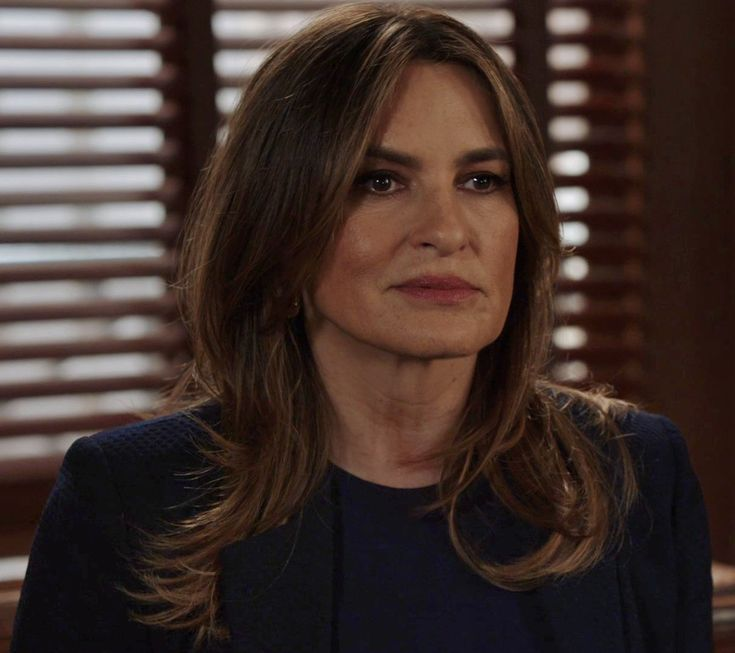

Quem é Olivia Benson?
Olivia Benson é a personagem central de Law & Order: SVU e uma das figuras mais marcantes da televisão. Desde o início da série, ela se destaca por sua inteligência, coragem e sensibilidade ao lidar com vítimas de crimes violentos. Sua postura firme e humana fez com que ela se tornasse uma das personagens mais respeitadas e admiradas pelo público.
Uma história de vida dolorosa
A trajetória de Olivia Benson é profundamente marcada por traumas desde o começo de sua vida. Ela foi concebida a partir do estupro sofrido por sua mãe, Serena Benson. Além dessa origem extremamente dolorosa, Olivia cresceu convivendo com uma mãe alcoólatra, emocionalmente instável e, em vários momentos, abusiva. Esse passado difícil ajuda a explicar por que Benson desenvolveu tanta empatia pelas vítimas e uma necessidade tão forte de lutar por justiça. :contentReference[oaicite:2]{index=2}
Mesmo carregando marcas profundas de sua infância, Olivia nunca permitiu que sua dor definisse totalmente quem ela seria. Ao contrário, ela transformou esse sofrimento em força, amadurecimento e compaixão, o que a tornou uma personagem tão complexa e humana.
O trauma com William Lewis
Um dos momentos mais perturbadores da história de Olivia Benson aconteceu quando ela se tornou alvo de William Lewis, um criminoso extremamente violento e obsessivo. Lewis passou a persegui-la de forma intensa, transformando sua vida em um pesadelo. Em um dos arcos mais marcantes da série, ele sequestrou Olivia e a manteve em cativeiro por vários dias, submetendo-a a tortura física e psicológica. Esse caso deixou sequelas emocionais profundas e marcou a vida da personagem de forma definitiva. :contentReference[oaicite:3]{index=3}
Mesmo depois desse trauma, Olivia demonstrou uma força impressionante para continuar trabalhando e enfrentando seus medos. Esse período mostra o quanto ela é resiliente, porque, apesar de tudo o que sofreu, continuou seguindo em frente e protegendo outras pessoas.
A evolução profissional dentro da SVU
Outro aspecto muito importante da trajetória de Olivia Benson é seu crescimento profissional dentro da unidade. Ela começou como detetive e, com o passar do tempo, foi conquistando novas posições de liderança por mérito, experiência e dedicação. Posteriormente, foi promovida a sargento, depois a tenente e, mais tarde, a capitã da SVU. Essa evolução mostra o reconhecimento de sua competência e reforça ainda mais sua importância dentro da série.
Sua subida de cargo representa muito mais do que uma promoção profissional. Ela simboliza a construção de uma mulher forte, respeitada e preparada para liderar, mesmo depois de ter enfrentado tantos desafios pessoais e emocionais.
Características marcantes
Entre as principais características de Olivia Benson estão sua coragem, sua liderança, sua inteligência emocional e sua humanidade. Mesmo diante dos casos mais pesados e dolorosos, ela procura agir com responsabilidade, equilíbrio e compaixão. Sua capacidade de ouvir, acolher e lutar pelas vítimas é uma das razões pelas quais a personagem se tornou tão querida pelo público.
Por isso, Olivia Benson é vista como um símbolo de força feminina na televisão. Ela representa superação, empatia e perseverança, mostrando que é possível continuar em frente mesmo depois de experiências extremamente traumáticas.
Imagens da personagem


Importância na série
Olivia Benson é uma personagem essencial para o sucesso de Law & Order: SVU. Sua presença ajudou a construir a identidade da série ao longo dos anos, tornando-a uma figura central e inesquecível. Mais do que uma policial, ela representa sensibilidade, força e compromisso com o que é certo.
Sua história é uma das razões pelas quais a série continua tão relevante: Olivia não é retratada como alguém perfeita, mas como uma mulher forte, marcada pela dor, que escolhe transformar trauma em coragem e liderança.